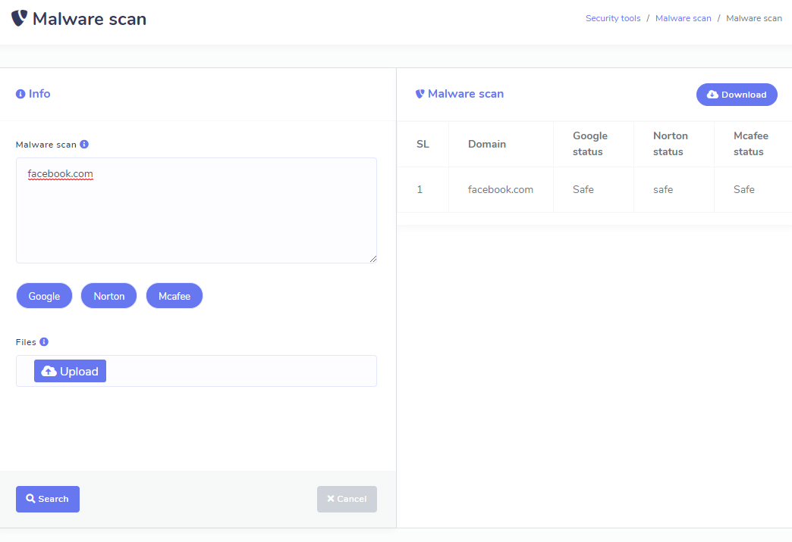
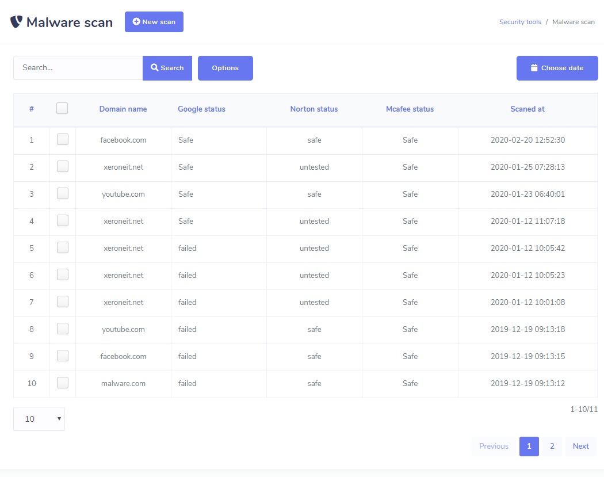
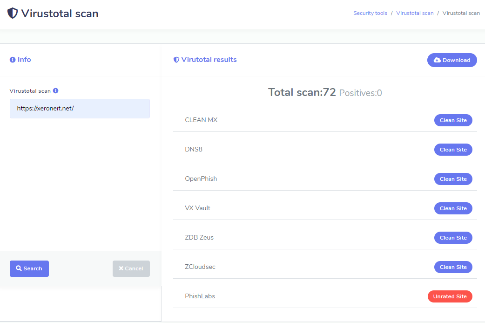
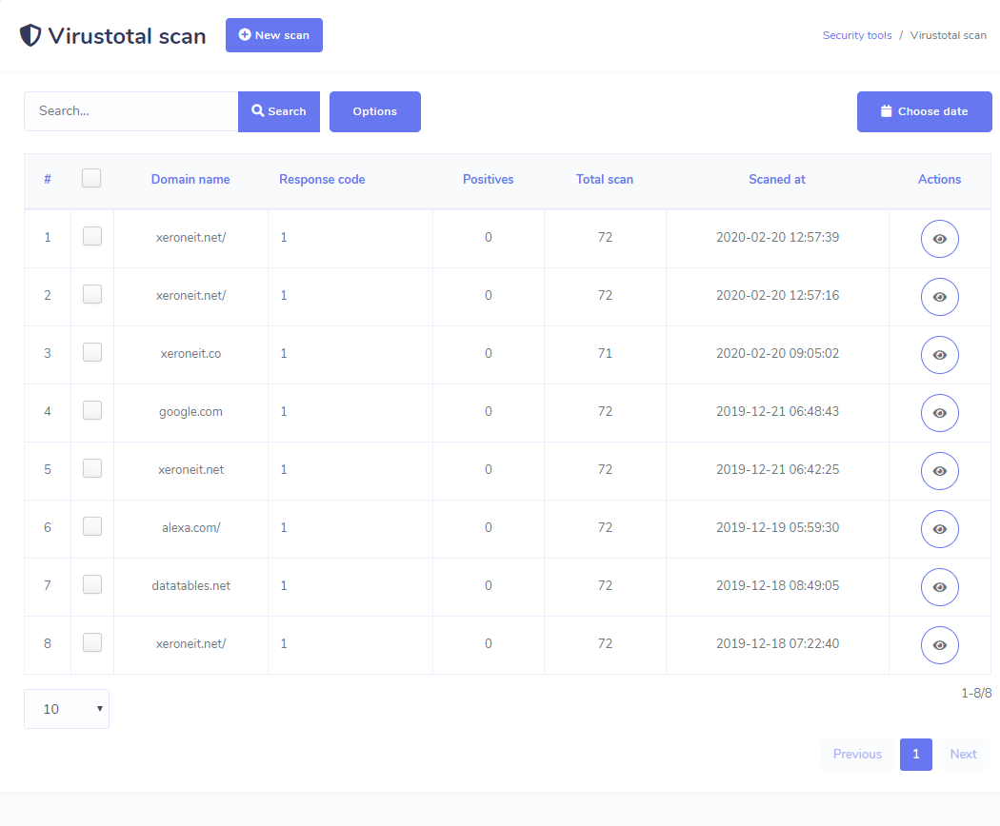

Security Tools
Security Tools
- Scan any websites’ malware status easily. Check the site is affected by malware or not. We have applied four most popular malware scanning sites information. You can check in Google Safe Browsing, McAfee and Norton. For Google Safe browsing you needs your own api key. It is described above how to get the api key for google safe browsing check.
- All you have to do is to click New Scan button and put domain names or upload text/csv file and then click Search button
- It may take some minutes depending number of websites you provide.
- Then finally when searching will be finished, you can see the result and can download.In the landing page, you will see list of all previous result you generated and you can filter the display. You can bulk download them or bulk delete them whenever you want.


VirusTotal
- VirusTotal tools can scan in 67 different places and give you the scan report.


XeroSEO Addons

SiteDoctor - A XeroSEO Add-on : Website Health Checker
Check out Get Site Doctor - SiteDoctor can check your website’s health status within a minute. Follow the suggestion provided by the SiteDoctor and make your site more SEO friendly. SiteDoctor will analysis all metrics of your website such as title, description, keyword, tag, page size, page speed, server status, compression status, mobile friendly status, image/css/javacript status and many more other important metrics of your website.
View Demo